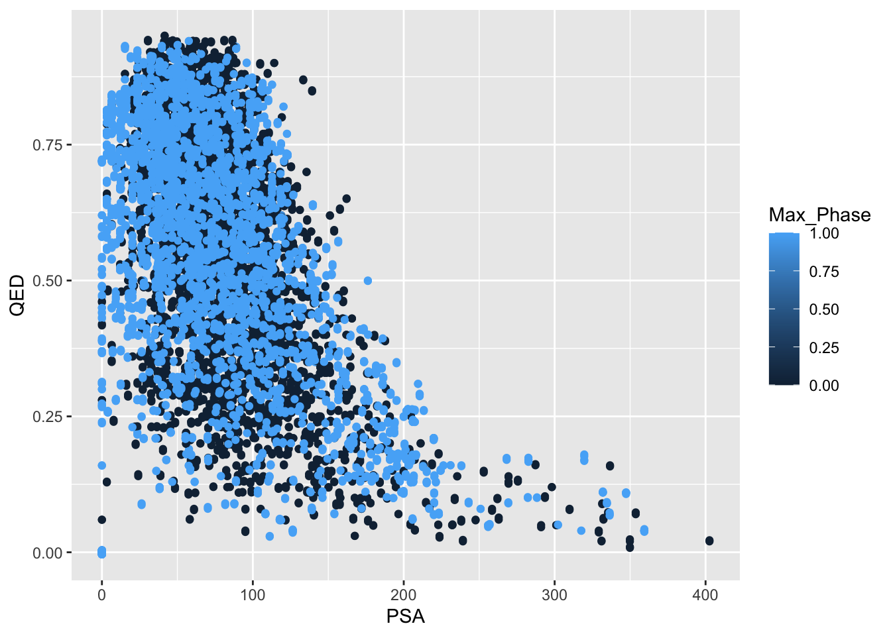
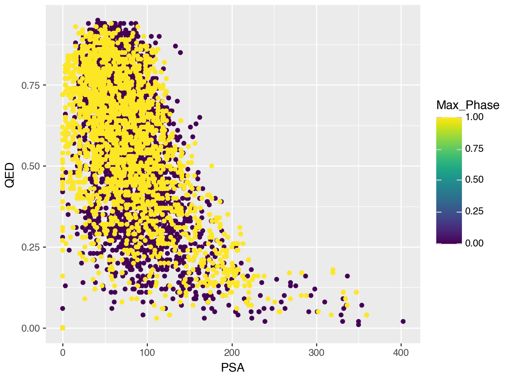

# Show R version used
R.version.string[1] "R version 4.5.1 (2025-06-13)"Jennifer HY Lin
November 10, 2025
The main goal here is to try using Python and R concurrently in a notebook setting. Both programming languages have their weaknesses and strengths, and also differences and similarities. By combining them together, we can leverage R’s strong statistical packages and Python’s well-developed and maintained machine learning packages in some of our scientific research work.
For rpy2 package, I’ve tried it in a separate post. Interestingly, I had to pause in the middle of working on it due to an issue about plotting. I’ve since returned to it after trying out reticulate, and have found a way to generate a plot using ggplot2 in rpy2.
For reticulate package, the concept is reversed where we are trying to call Python in a R environment as it is a R-based package. So I’ve changed the title of this post to reflect this.
Steps I’ve taken:
Initial preparation - this notebook has been created using a virtual environment from uv, with the associated repository created using the uv project management structure as well (please also see this part regarding virtual environment in R). This step has been done prior to the executions of the following steps.
Install R with version at least 4.0 or above, and Python with version at least 3.7 or above (reference). The versions of R and Python used here are suggested by the old reference post about using rpy2 from 2022. So far when I’ve tried it with reticulate package, it works so I’ll leave them as how they are now.
Install R’s language server. All R packages are to be installed via R console/terminal (not in notebooks, otherwise you may run into some error messages).
Install reticulate package as shown in its GitHub repository.
Install rmarkdown package so we can preview .qmd docs (this step may not be required as this is purely for posting on my blog). Some further set-ups may be required if using VS Code, e.g. go to “Settings” of VS Code -> under “User” -> Text Editor -> Files -> Associations -> add *.Rmd as “Item” and rmd as “Value”
Install R extension for VS Code (may not be required as this is because I’m using VS Code. There is another very similar IDE called Positron created by Posit which may not require this step).
Install shiny package (I was reminded to do this while installing these packages… unsure of its direct relevance to my goal here but it doesn’t hurt so I’ve done it)
Quarto markdown documents (.qmd) and R markdown documents (.rmd) are interchangeable as .qmd are based on .rmd so I’ve done a little trial using reticulate package first in .rmd which worked, and then decided to switch to .qmd so that this piece of work may be published on my blog later. The convenient thing here is that you can literally just change the file name ending with .rmd to .qmd to convert a .rmd file into a .qmd file.
# Import R packages/libraries in R
library(reticulate)
# Import Python packages/libraries in R
# This step is required to install Python packages in R while using reticulate
# Reference: https://rstudio.github.io/reticulate/articles/python_packages.html
# Import pandas
py_require("pandas")
# below likely needed if calling pandas in r code, but since I'll be using python code,
# we can just import python packages as usual without following code
#pd <- import("pandas")
# Import plotnine
py_require( "plotnine")
#p9 <- import("plotnine")python: /Users/jenniferlin/Data_in_life_blog/.venv/bin/python
libpython: /Users/jenniferlin/.local/share/uv/python/cpython-3.12.7-macos-x86_64-none/lib/libpython3.12.dylib
pythonhome: /Users/jenniferlin/Data_in_life_blog/.venv:/Users/jenniferlin/Data_in_life_blog/.venv
virtualenv: /Users/jenniferlin/Data_in_life_blog/.venv/bin/activate_this.py
version: 3.12.7 (main, Oct 16 2024, 09:10:10) [Clang 18.1.8 ]
numpy: /Users/jenniferlin/Data_in_life_blog/.venv/lib/python3.12/site-packages/numpy
numpy_version: 1.26.4
NOTE: Python version was forced by VIRTUAL_ENVBelow is a small test snippet of running Python code in R.
# Code snippet below borrowed from https://www.geeksforgeeks.org/r-language/integrating-python-code-with-r/
# Running Python code in R
py_run_string("x = 10")
py_run_string("y = 5")
py_run_string("z = x + y")
# Access the Python variable in R
z <- py$z
print(z)[1] 15I have a feeling now that it’s easier to use reticulate package for the purpose of combining Python and R in one place.
Next example is using Python code to read a dataframe using Pandas.
```{python}
## This is the code for read_df.py
# import pandas
import pandas as pd
def reading_df(file):
# Reading a df (using one of my old cleaned datasets from a while ago)
df = pd.read_csv(file)
df = df.rename(columns={"QED Weighted": "QED", "Polar Surface Area": "PSA"})
return df
```Then I’m using R’s well-known plotting package, ggplot2, to plot a scatter plot as an example shown below.
# Read data using read_df.py
source_python("read_df.py")
df <- reading_df("df_ml.csv")
library(ggplot2)
ggplot(df, aes(PSA, QED, colour = Max_Phase)) +
geom_point() +
geom_jitter()
An equivalent Python plotting library based on ggplot2 is plotnine. The same plot is shown below using plotnine with Python code.
from read_df import reading_df
df_data = reading_df("df_ml.csv")
import plotnine as p9
# from plotnine import *
# from plotnine import ggplot, aes, geom_point
plot = (p9.ggplot(data=df_data) + p9.geom_point(mapping=p9.aes("PSA", "QED", color = "Max_Phase")))
plot.show()
All plots shown in this post using reticulate and the other post using rpy2 should look the same by using the same set of data but different code in two different programming languages (which means I’ve somewhat achieved my small goal here!).
I realise after finishing these two posts about using R and Python together that I should’ve created two separate repositories and virtual environments where one is based on Python and the other based on R to improve the reproducibilities of the work (hmm… currently it may look messy with what I’ve done here, as these two posts are in a Python-based virtual environment). It is possible and most likely recommended to set up a R virtual environment when working on R-related projects. This introductory post about renv will help with this.